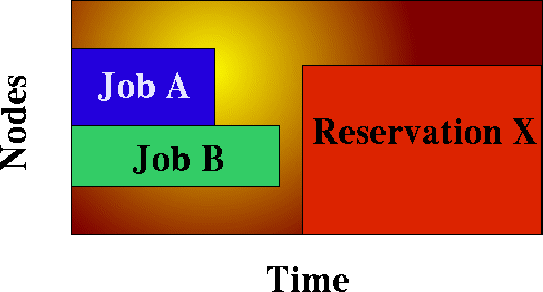

5.2 Node Allocation
While job prioritization allows a site to determine which job to run, node allocation policies allow a site to specify how available resources should be allocated to each job. The algorithm used is specified by the parameter NODEALLOCATIONPOLICY . There are multiple node allocation policies to choose from allowing selection based on reservation constraints, node configuration, available resource constraints, and other issues. These policies can be specified with a system wide default value and on a per job override basis. The following algorithms are available and described in detail below: FIRSTAVAILABLE , LASTAVAILABLE , PRIORITY , CPULOAD , MINRESOURCE , CONTIGUOUS , MAXBALANCE , FASTEST , and LOCAL.
- 5.2.1 Node Allocation Overview
- 5.2.2 Resource Based Algorithms
- 5.2.3 Time Based Algorithms
- 5.2.4 Locally Defined Algorithms
- 5.2.5 Specifying 'Per Job' Resource Preferences
 Node allocation policy, along with many many of settings can be set graphically with the Moab Cluster ManagerTM.
Node allocation policy, along with many many of settings can be set graphically with the Moab Cluster ManagerTM.
5.2.1 Node Allocation Overview
Node allocation is the process of selecting the best resources to allocate to a job from a list of available resources. Making this decision intelligently is important in an environment which possesses one or more of the following attributes:
- heterogeneous resources (resources which vary from node to node in terms of quantity or quality)
- shared nodes (nodes may be utilized by more than one job)
- reservations or service guarantees
- non-flat network (a network in which a perceptible performance degradation may potentially exist depending on workload placement)
5.2.1.1 Heterogeneous Resources
If the available compute resources have differing configurations, and a subset of the submitted jobs cannot run on all of the nodes, then allocation decisions can significantly affect scheduling performance. For example, a system may be comprised of two nodes, A and B, which are identical in all respects except for RAM, possessing 256MB and 1GB of RAM respectively. Two single processor jobs, X and Y, are submitted, one requesting at least 512 MB of RAM, the other, at least 128 MB. The scheduler could run job X on node A in which case job Y would be blocked until job X completes. A more intelligent approach may be to allocate node B to job X because it has the fewest available resources yet still meets the constraints. This is somewhat of a 'bestfit' approach in the configured resource dimension and is essentially what is done by the 'MINRESOURCE' algorithm.
5.2.1.2 Shared Nodes
Shared node systems are most often involve SMP nodes although this is not mandatory. Regardless, when sharing the resources of a given node amongst tasks from more than one job, resource contention and fragmentation issues arise.
Most current systems still do not do a very good job of logically partitioning the resources (i.e., CPU, Memory, network bandwidth, etc.) available on a given node. Consequently contention often arises between tasks of independent jobs on the node. This can result in a slowdown for all jobs involved which can have significant ramifications if large way parallel jobs are involved.
On large way SMP systems (i.e., > 32 processors/node), job packing can result in intra-node fragmentation. For example, again take two nodes, A and B each with 64 processors. Assume they are currently loaded with various jobs and have 24 and 12 processors free respectively. Two jobs are submitted, Job X requesting 10 processors, and job Y requesting 20 processors. Job X can start on either node but starting it on node A will prevent job Y from running. An algorithm to handle intra-node fragmentation is pretty straightforward for a single resource case, but what happens when jobs request a combination of processors, memory, and local disk. Determining the correct node suddenly gets significantly more complex
5.2.1.3 Reservations or Service Guarantees
A reservation based system adds the time dimension into the node allocation decision. With reservations, node resources must be viewed in a type of two dimension 'node-time' space. Allocating nodes to jobs fragments this node-time space and makes it more difficult to schedule jobs in the remaining, more constrained node-time slots. Allocation decisions should be made in such a way as top minimize this fragmentation and maximize the schedulers ability to continue to start jobs in existing slots. See the figure to hopefully remove a small amount of the incoherency contained in the above sentences. In this figure, Job A and job B are already running. A reservation, X, has been created some time in the future. Assume that job A is 2 hours long and job B is 3 hours long. Again, two new single processor jobs are submitted, C and D; job C requires 3 hours of compute time while job D requires 5 hours. Either job will just fit in the free space located above Job A or in the free space located below job B. If job C is placed above Job A, job D, requiring 5 hours of time will be prevented from running by the presence of reservation X. However, if job C is placed below job B, job D can still start immediately above Job A. Hopefully, this canned example demonstrates the importance of time based reservation information in making node allocation decisions, both at the time of starting jobs, and at the time of creating reservations. The impact of time based issues grows significantly with the number of reservations in place on a given system. The LASTAVAILABLE algorithm works on this premise, locating resources which have the smallest space between the end of a job under consideration and the start of a future reservation.
5.2.1.4 Non-flat Network
On systems where network connections do not resemble a flat 'all-to-all' topology, the placement of tasks may present a significant impact on the performance of communication intensive parallel jobs. If latencies and bandwidth of the network between any two nodes vary significantly, the node allocation algorithm should attempt to pack tasks of a given job as close to each other as possible to minimize the impact of these bandwidth and latency differences.
5.2.2 Resource Based Algorithms
Maui contains a number of allocation algorithms which address some of the needs described above. Additional 'homegrown' allocation algorithms may also be created and interfaced into the Maui scheduling system. The current suite of algorithms is described below.
5.2.2.1 CPULOAD
Nodes are selected which have the maximum amount of available, unused cpu power, i.e. <#of CPU's> - <CPU load>. Good algorithm for timesharing node systems. This algorithm is only applied to jobs starting immediately. For the purpose of future reservations, the MINRESOURCE algorithm is used.
5.2.2.2 FIRSTAVAILABLE
Simple first come, first server algorithm where nodes are allocated in the order they are presented by the resource manager. This is a very simple, and very fast algorithm.
5.2.2.3 LASTAVAILABLE
Algorithm which selects resources so as to minimize the amount of time after the job and before the the trailing reservation. This algorithm is a 'best fit in time' algorithm which minimizes the impact of reservation based node-time fragmentation. It is useful in systems where a large number of reservations (job, standing, or administrative) are in place.
5.2.2.4 PRIORITY
This algorithm allows a site to specify the priority of various static and dynamic aspects of compute nodes and allocate them accordingly. It is highly flexible allowing node attribute and usage information to be combined with reservation affinity. Using node allocation priority, the following priority components can be specified:
| Component Name | Description |
| ADISK | local disk currently available to batch jobs |
| AMEM | real memory currently available to batch jobs |
| APROCS | processors currently available to batch jobs (configured procs - dedicated procs) |
| ASWAP | virtual memory currently available to batch jobs |
| CDISK | total local disk allocated for use by batch jobs |
| CMEM | total real memory on node |
| CPROCS | total processors on node |
| CSWAP | total virtually memory configured on node |
| JOBCOUNT | number of jobs currently running on node |
| LOAD | current 1 minute load average |
| PREF |
node meets job specific resource preferences |
| PRIORITY | admin specified node priority |
| RESAFFINITY | reservation affinity for job being evaluated |
| SPEED | if set, node 'procspeed'. otherwise, relative node 'speed' |
| USAGE | percentage of time node has been running batch jobs since the last statistics initialization |
The node allocation priority function can be specified on a node by node or cluster wide basis. In both cases, the recommended approach is to specify the PRIORITYF attribute with the NODECFG parameter. A few examples follow.
Example 1: Favor the fastest nodes with the most available memory which are running the fewest jobs.
NODEALLOCATIONPOLICY PRIORITY
NODECFG[DEFAULT] PRIORITYF='SPEED+ .01 * AMEM - 10 * JOBCOUNT'
Example 2: A site has a batch system consisting of two dedicated 'batchX' nodes, as well as numerous desktop systems. The allocation function should favor batch nodes first, followed by desktop systems which are the least loaded and have received the least historical usage.
NODEALLOCATIONPOLICY PRIORITY
NODECFG[DEFAULT] PRIORITYF='-LOAD - 5*USAGE'
NODECFG[batch1] PRIORITY=1000 PRIORITYF='PRIORITY + APROCS'
NODECFG[batch2] PRIORITY=1000 PRIORITYF='PRIORITY + APROCS'
Example 3: Pack tasks onto loaded nodes first.
NODEALLOCATIONPOLICY PRIORITY
NODECFG[DEFAULT] PRIORITYF=JOBCOUNT
 |
As in the example above, if spaces are placed within the priority function for readability, the priority function value will need to be quoted to allow proper parsing. |
5.2.2.5 MINRESOURCE
This algorithm priorities nodes according to the configured resources on each node. Those nodes with the fewest configured resources which still meet the job's resource constraints are selected.
5.2.2.6 CONTIGUOUS
This algorithm will allocate nodes in contiguous (linear) blocks as required by the Compaq RMS system.
5.2.2.7 MAXBALANCE
This algorithm will attempt to allocate the most 'balanced' set of nodes possible to a job. In most cases, but not all, the metric for balance of the nodes is node speed. Thus, if possible, nodes with identical speeds will be allocated to the job. If identical speed nodes cannot be found, the algorithm will allocate the set of nodes with the minimum node speed 'span' or range.
5.2.2.8 FASTEST
This algorithm will select nodes in 'fastest node first' order. Nodes will be selected by node speed if specified. If node speed is not specified, nodes will be selected by processor speed. If neither is specified, nodes will be selected in a random order.
5.2.2.9 LOCAL
This will call the locally created 'contrib' node allocation algorithm.
See also
N/A.
5.2.3 Time Based Algorithms
Under Construction
5.2.4 Locally Defined Algorithms
Under Construction
5.2.5 Specifying 'Per Job' Resource Preferences
While the resource based node allocation algorithms can make a good guess at what compute resources would best satisfy a job, sites often possess a subset of jobs which benefit from more explicit resource allocation specification. For example one job may perform best on a particular subset of nodes due to direct access to a tape drive, another may be very memory intensive. Resource preferences are distinct from node requirements. While the former describes what a job needs to run at all, the latter describes what the job needs to run well. In general, a scheduler must satisfy a job's node requirement specification, and then, as best possible, should satisfy the job's resource preferences.
5.2.5.1 Specifying Resource Preferences
A number of resources managers natively support the concept of resource preferences (ie, Loadleveler). When using these systems, the language specific preferences keywords may be used. For systems which do not support resource preferences natively, Maui provides a resource manager extension keyword, 'PREF' which may be utilized to specify desired resources. This extension allows specification of node features, memory, swap, and disk space conditions which define whether or not the node is considered to be 'preferred. (NOTE: Maui 3.2.5 only supports feature based preferences)
5.2.5.2 Selecting 'Preferred' Resources
Enforcing resource preferences is not completely straightforward. A site may have a number of potentially conflicting desires which the scheduler is asked to simultaneously satisfy. For example, a scheduler may be asked to maximize the proximity of the allocated nodes at the same time it is supposed to satisfy resource preferences and minimize node overcommitment. To allow site specific 'weighting' of these varying desires, Maui allows resources preferences to be enabled through the 'Priority ' node allocation algorithm. For example, to utilize resource preferences together with node load, the following configuration might be used:
-----
NODEALLOCATIONPOLICY PRIORITY
NODECFG[DEFAULT] PRIORITYF='5 * PREF - LOAD'
-----
To request specific resource preferences, a user could then submit a job indicating those preferences. In the case of a PBS job, the following might work:
----
qsub -l nodes=4,walltime=1:00:00 -W x=PREF(FEATURE:FAST,FEATURE:TAPE)
----